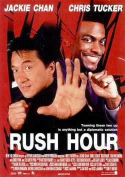

Rush Hour
1998 • 1h 38m
THE FASTEST HANDS IN THE EAST VERSUS THE LOUDEST MOUTH IN THE WEST
When the daughter of the Hong Kong consul is kidnapped, Inspector Lee is summoned to Los Angeles. The FBI, fearing that he might jeopardize their case assign loudmouthed LAPD Detective James Carter to distract Lee. Not content on watching from the sidelines, the two take action by forming an unlikely partnership and attempt to crack the case themselves.
Director: Brett Ratner
Starring: Jackie Chan • Chris Tucker • Ken Leung • Tom Wilkinson
Comedy • Action • Crime
Reviews: Imdb: 7/10 • Metascore: 60 • Letterboxd: 3.5/5